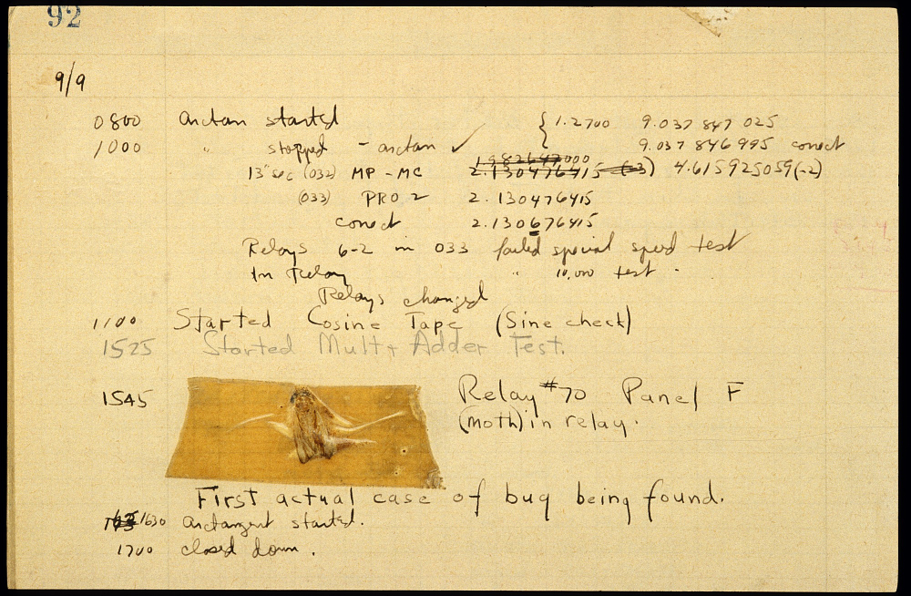

class: center, middle # More on basic Python .author[ CORE-UA 109.01, Joanna Klukowska <br> adapted from slides for CSCI-UA.002 by D. Engle, C. Kapp and J. Versoza ] --- class: center, middle .section[ # Quick Review ] --- # Line endings and separators : - the use of `end` and `sep` in `print()` function - `end` changes what is printed at the end of the string - `sep` changes what is printed in between different arguments - can be used in the same call to the `print()` function - can contain one or more characters in single or double quotes __example__: what is printed by the following code? ``` python print("word1", 'word2', "word3", sep=" *** ", end='\n?\n') print("abcd", "efgh", "ijkl", sep=' : ', end=" END ") ``` -- ``` word1 *** word2 *** word3 ? abcd : efgh : ijkl END ``` --- # Escape sequences: - escape characters allow us to have strings containing special characters (i.e., characters that have normally a different meaning in Python) - escape sequence starts with a backslash `\` - '\n' - new line character - '\t' - tab character - '\\' - backslash character - '\"' - double quote character - '\'' - single quote character - there are others, but these should be enough for a while __example__: what is printed by the following code? .left-column2[ ```python print(' /\\ ') print(' "" ') print(' /""\\ ') print(' """" ') print(' /""""\\ ') print(' """""" ') print(' || ') ``` ] .right-column2[ ```python print(" /\\ ") print(" \"\" ") print(" /\"\"\\ ") print(" \"\"\"\" ") print(" /\"\"\"\"\\ ") print(" \"\"\"\"\"\" ") print(" || ") ``` ] --- # Type conversion and user input: - type conversions - to change a piece of data from string to int, or from int to float, ... , we need to use conversion function - human heads can do this without extra functions - computers need to be told explicitly - `int( x )` - converts a string or a number to an integer - `str ( x )` - converts the argument to a string - `float ( x )` - converts a string or a number to a floating point number - the `intpu()` function __ALWAYS__ returns a string - convert the return value to a number if it needs to be used as a number --- class: center, middle .section[ # Data Types ] --- # why do we need data types? - Python needs to know how to set aside memory in your computer based on what kind of information you want to store - There are three basic types of data that we will be working with during the first half of the term - strings (character-based data) - numbers - logical Values (True / False) - For numerical types we further subdivide them into - integers - whole numbers that do not contain a decimal point - abbreviated as `int` in Python - example: 5, -5, 100, 10032 - floating point numbers (the ones you used to call decimal) - numbers that contain a decimal point - abbreviated as `float` in Python - example: 5.0, -5.0, 100.99, 0.232132234 --- # what is the data type of each of those? .left-column2[ - 5 - 5.5 - "Hello" - "5.5" - 2.975 - 2.0 ] -- .right-column2[ - int - float - string - string !!! - float - float ] -- Keep in mind that the `input()` function __ALWAYS__ returns a string (even if the user types a number). ```python # ask the user for their monthly salary monthly_salary = input('how much do you make in a month?') # convert the salary into a float monthly_salary_float = float(monthly_salary) # calculate the yearly salary yearly_salary = monthly_salary_float * 12 # print the result print ('that means you make', yearly_salary, 'in a year') ``` --- class: center, middle .section[ # doing math ] --- # arithmetic operators: with numbers (whole numbers and decimal numbers) the above operators are used to perform standard mathematical operations: * `+ ` addition, for example `25 + 10` * `- ` subtraction, for example `25 - 10` * `*` multiplication, for example `25 * 10` * `/` division, for example `25 / 10` * `//` division, for example `25 / 10` * `%` remainder/modulo, for example `25 / 10` * `**` exponentiation, for example `25 ** 10` --- # division - Python contains two different division operators - `/` operator is used to calculate the floating-point result of a division operation (that's what we do in math) - `//` operator is used to calculate the integer result of a division operation - essentially throwing away the remainder or a fractional part - this operation will always round down - most times you will use the floating point division operator (`/`) -- __example__ .left-column2[ `10 / 5 = ??` `10 // 5 = ??` `10 / 4 = ??` `10 // 4 = ??` ] -- .right-column2[ `2.0`, often written as just 2 `2` `2.25` `2` ] --- # remainder / modulo operator - the remainder or modulo operator ("%") returns the remainder portion of a division operation __example__ ` 7 / 2 = 3.5 ` ` 7 // 2 = 3 ` there are exactly three 2s that "fit" into a 7 ` 7 % 2 = 1 ` 1 is what is left over after we keep removing 2 from 7 as many times as we can -- __exercise__ figure out the results of the following expressions `11 % 3` `15 % 4` `15 % 10` `20 % 7` `13 % 13` `5 % 1` --- class: center, middle .section[ # errors, bugs and debugging ] --- # why the name? __bugs__ are problems or errors in the code - the first program/computer bug was an actual bug (a moth, to be exact) - 1947, Harvard Mark II Computer .center[  ] - see, [http://americanhistory.si.edu/collections/search/object/nmah_334663](http://americanhistory.si.edu/collections/search/object/nmah_334663) for more information --- # types of errors - __Syntax errors__: The code does not follow the rules of the language; for example, a single quote is used where a double quote is needed; a colon is missing; a keyword is used as a variable name. - __Runtime errors__: In this case, your code is fine but the program does not run as expected (it "crashes"). For example, if your program is meant to divide two numbers, but does not test for a zero divisor, a run-time error would occur when the program attempts to divide by zero. - __Logic errors__: These can be the hardest to find. In this case, the program is correct from a syntax perspective; and it runs; but the result is unanticipated or outright wrong. For example, if your program prints "2+2 = 5" the answer is clearly wrong ☺ --- # syntax errors the IDE or a compiler is good in catching those - but you are the one who needs to fix them __example__: figure out what is wrong with the following lines of code ```python print ( "Hello, world!' ) ``` ```python name = input ('Please enter your name: ) ``` ```python print (" The integer part of 35.01425 is ", int(35.01425 ) ``` --- # syntax errors the IDE or a compiler is good in catching those - but you are the one who needs to fix them __example__: figure out what is wrong with the following lines of code ```python # the string delimiters are not matching print ( "Hello, world!' ) ``` ```python # the closing quote for string is missing name = input ('Please enter your name: ) ``` ```python # there are two open parenthesis, but only one closing print (" The integer part of 35.01425 is ", int(35.01425 ) ``` HINT: the context highlighting sometimes gives a clue about syntax problems. --- # runtime errors these problems happen when the program is running and it is pretty clear that something went wrong - the programmer has to figure out the reason and fix it __example__: figure out what is wrong with the following lines of code; the runtime errors that this code causes are shown below ```python num = input ('give me a number: ') new_num = 10 + num print (new_num) ``` _execution_: ``` give me a number: 15 --------------------------------------------------------------------------- TypeError Traceback (most recent call last) /home/asia/Data/NYU_Teaching/core109/code/week3.py in <module>() 1 num = input ('give me a number: ') ----> 2 new_num = 10 + num 3 print (new_num) TypeError: unsupported operand type(s) for +: 'int' and 'str' ``` --- # logical errors these problems are the hardest to locate: the program runs just fine, but the results are not what they should be - the programmer needs to be able to recognize the invalid results, find their cause and fix the code __example__: figure out what is wrong with the following lines of code; the runtime errors that this code causes are shown below ```python num = input ('give me a number: ') new_num = 5*num print ( 5, " * ", num, " = ", new_num) ``` _execution_: ``` give me a number: 13 5 * 13 = 1313131313 ``` --- # simple debugging techniques - set small, incremental goals for your program; don't try and write large programs all at once - stop and test your work often as you go; celebrate small successes <img src="https://upload.wikimedia.org/wikipedia/commons/8/81/Noto_Emoji_Oreo_1f389.svg" width=50px alt="celebrate" > - use comments to have Python ignore certain lines that are giving you trouble --- class: center, middle .section[ # programming challenges ] --- # code mangler The __code mangler__ is a mean little creature that sneaks into my computer and _mangles_ the lines of code in my programs. - sometimes it rearranges the order of the lines - sometimes it removes all the comments - sometimes it removes parts of the lines and replaces the characters by strings of XXXX - ... Can you help me fix this code that the __code mangler__ mangled? All the lines and comments are there, but they are in a wrong order. ```python # calculate the yearly salary # print the result monthly_salary = input('how much do you make in a month?') print ('that means you make', yearly_salary, 'in a year') # convert the salary into a float # ask the user for their monthly salary monthly_salary_float = float(monthly_salary) yearly_salary = monthly_salary_float * 12 ``` -- __Solution__ Try to run your fixed code and see if it is working.